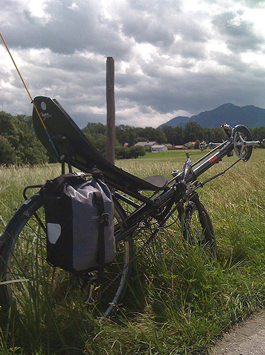
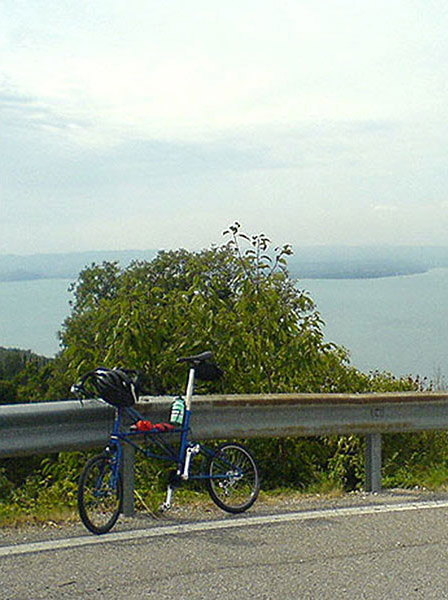

Zensur im Alltag der öffentlichen Medien
Heiko Richard Paul Mustermann 2013


- 


- 
„Zensur“ ist Titel einer gestalterischen Bachelorarbeit, die sich auf typografische Weise mit Zensur auseinandersetzt. Es handelt sich um ein Buch mit der Größe von 36cm x 27cm: ein unhandliches Format für ein unhandliches Thema.
Zu Beginn galt es herauszufinden, welche Arten von Zensur es gibt, wo Zensur stattfindet und wie sie sich auswirkt. Bei intensiver Betrachtung verschwimmen allerdings die Grenzen, ab wann man von einer Zensur sprechen kann. Zudem war es schwierig, an konkrete Fälle von Zensur zu kommen. Also entschied ich mich, deren Auswirkungen darzustellen.
Durch Zensur kann nur ein unvollständiges Gesamtbild entstehen, und nur durch intensive Auseinandersetzung mit speziellen Themen merkt man, dass in der Themenaufarbeitung etwas nicht stimmt bzw. dass etwas fehlt. Dieses Gefühl des„Fehlens“, des „Hier-stimmt-etwas-nicht“ sollte dem Betrachter typografisch vermittelt werden.